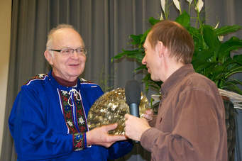
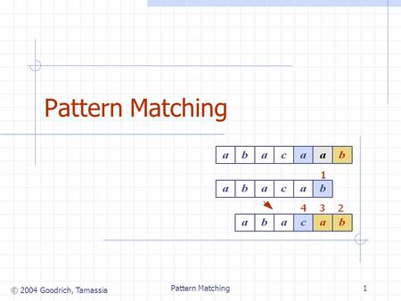
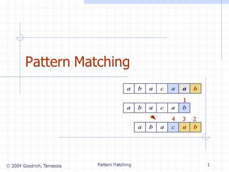
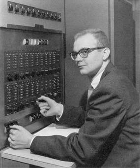
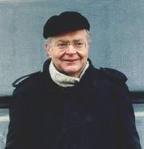

Born: 10 January 1938 in Milwaukee, Wisconsin, USA
Donald Ervin Knuth is an American computer scientist, mathematician, and Professor Emeritus at Stanford University. He is the author of the multi-volume work The Art of Computer Programming and has been called the "father" of the analysis of algorithms. He contributed to the development of the rigorous analysis of the computational complexity of algorithms and systematized formal mathematical techniques for it. In the process he also popularized the asymptotic notation. In addition to fundamental contributions in several branches of theoretical computer science, Knuth is the creator of the TeX computer typesetting system, the related METAFONT font definition language and rendering system, and the Computer Modern family of typefaces.
Professor Knuth is one of the world's greatest computer scientists, whose works have had a profound influence on the subject over the past half-century. His research covers diverse areas of mathematics and computer science, including structure in random graphs, word problems in universal algebras, pattern matching in strings, prefix codes and binary search trees.
 


Donald Ervin Knuth, Selected Papers on Computer Science
“The best programs are written so that computing machines can perform them quickly and so that human beings can understand them clearly. A programmer is ideally an essayist who works with traditional aesthetic and literary forms as well as mathematical concepts, to communicate the way that an algorithm works and to convince a reader that the results will be correct.”

"Science is what we understand well enough to explain to a computer; art is everything else.”

Donald Knuth was born in 1938 in Milwaukee, Wisconsin, and holds a B.S. and M.S. in mathematics from the Case Institute of Technology (1960) and a Ph.D. in mathematics (1963) from Caltech. Over a prolific publishing career, Knuth is best known for having written the classic, multivolume series, The Art of Computer Programming, the "Bible" of computer science pedagogy. Through his writing and teaching at Stanford University, where he was a long-time professor (beginning in 1968), Knuth has influenced the thinking of countless computer science students and professionals.